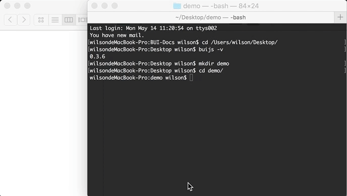

创建工程
完整的创建工程命令如下 如果没有这些环境，请先安装node12以上，再按步骤一步步安装。
# 创建工程
buijs create bui-demo
# 进入工程
cd bui-demo
# 安装工程依赖
npm install
# 运行预览
npm run dev

1. 全局安装 buijs
buijs是一个 cli 命令工具（需要 node 12 支持），用于快速构建工程，模板，更新平台等功能。
Windows 用户
npm install -g buijs
MAC 用户
sudo npm install -g buijs
MAC 需要加上权限，输入开机密码
2. 创建单页工程
创建名为bui-demo的工程模板。
# 创建工程模板
buijs create bui-demo
# 进入工程目录
cd bui-demo
也可以直接下载 BUI 单页工程开发包 ，解压后进行第 3 步安装依赖。
3. 安装依赖
第 1 种, 通过 npm (部分地区安装较慢)
# 安装依赖
$ npm install
第 2 种, 通过cnpm (推荐)
# 安装cnpm
$ npm install -g cnpm --registry=https://registry.npmmirror.com
# 安装依赖
$ cnpm install
第 3 种, yarn 安装
# 安装
$ npm install -g yarn
# 安装依赖
$ yarn install
4. 运行预览
执行npm run dev会自动打开默认浏览器预览，编辑内容实时刷新。
# 运行预览
$ npm run dev